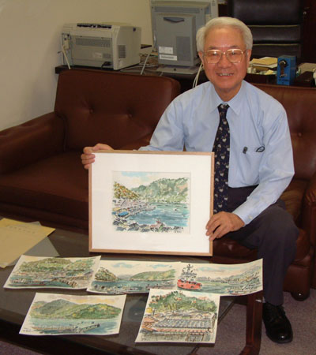

1929年 3月24日 北九州市若松区生まれ
2019年 11月14日 逝去
学歴
職歴
- 1951年 5月 九州大学理学部助手
- 1966年 1月 東京大学物性研究所助教授
- 1970年 1月 東北大学理学部教授
- 1992年 4月 東北大学名誉教授
- 1993年 4月 岡崎国立共同研究機構分子科学研究所長
- 1999年 4月 岡崎国立共同研究機構長
- 2001年 4月 分子科学研究所研究顧問
- 2005年 4月 分子科学研究所特別顧問
専門
受賞
- 1988年 4月 日本化学会賞
- 1989年 5月 日本分光学会賞
- 1997年 4月 紫綬褒章
- 2004年 4月 瑞寶重光章
|
 |